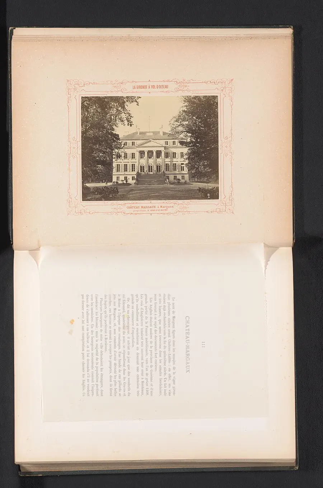
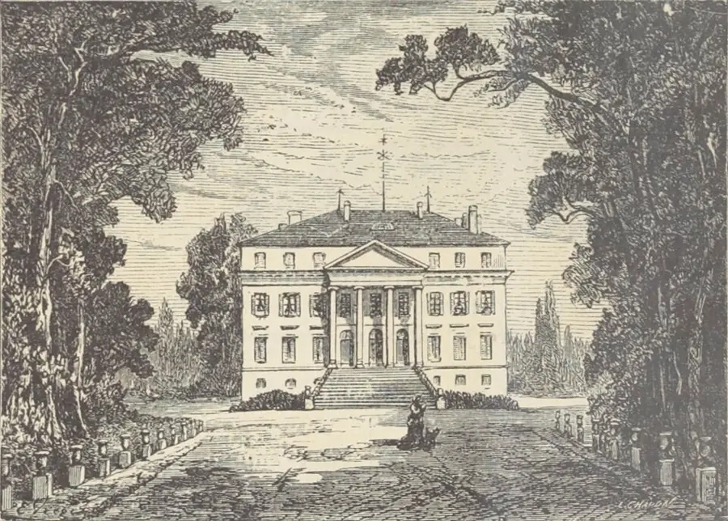
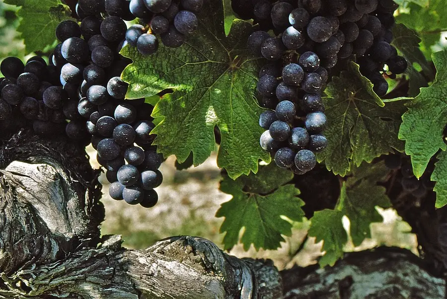

대표 로고대표 브랜드 마크
대표 로고대표 브랜드 마크샤토 마르고 Château Margaux
샤토 마르고(Château Margaux)는 프랑스 보르도 메독 마르고 지역에 있는 262헥타르 규모의 포도원이다. 같은 이름의 포도주를 생산하며, 5개의 일등급 그랑 크뤼 중 하나이다.
최종 업데이트
샤토 마르고는 어떤 브랜드인가
샤토 마르고는 프랑스 지롱드 데파르트망의 메독 지방, 마르고 코뮌에 위치한 포도원이다. 면적은 262헥타르이며 같은 이름의 포도주를 생산한다.
이 포도주는 세계에서 가장 명성 있는 포도주 가운데 하나이다. 포도원의 첫 번째 발자취는 13세기로 거슬러 올라간다.
5개의 일등급 그랑 크뤼 중 하나이며, 1855년 보르도 포도주 공식 분류에서 그랑 크뤼로 선정된 와인 중 하나이다. 매우 비싼 빈티지는 지속적으로 높은 프리미엄이 붙으며 수십 년 넘게 보관되고 거래된다.
샤토 마르고의 브랜드 아이덴티티는 무엇인가
메독 마르고 코뮌의 자갈 토양에서 나는 적 포도주로 알려진 그랑 크뤼 포도원이며, 1787년산 한 병의 가격 기록으로도 언급되는 곳이다.
샤토 마르고의 대표 제품과 서비스는 무엇인가
샤토 마르고의 주력 생산물은 같은 이름의 적 포도주이다. 이 포도주는 마르고 AOC에 속한다.
포도원은 가론 강 하구의 왼쪽 강둑에 있으며, 이 지역의 유명한 자갈 토양의 혜택을 받았다. 포도원 면적은 262헥타르이다.
세계에서 가장 훌륭하고 매우 인기 있는 적 포도주 생산자로서의 지위를 가진 곳이다.
샤토 마르고 로고는 어떻게 변해왔나
대표 로고대표 브랜드 마크사진으로 보는 샤토 마르고의 역사



자주 묻는 질문
샤토 마르고는 어느 나라 브랜드인가요?
샤토 마르고는 프랑스의 식음료 브랜드입니다.
샤토 마르고의 브랜드 아이덴티티는 무엇인가요?
메독 마르고 코뮌의 자갈 토양에서 나는 적 포도주로 알려진 그랑 크뤼 포도원이며, 1787년산 한 병의 가격 기록으로도 언급되는 곳이다.
샤토 마르고의 대표 제품은 무엇인가요?
샤토 마르고의 주력 생산물은 같은 이름의 적 포도주이다.
샤토 마르고의 공식 웹사이트는 어디인가요?
샤토 마르고의 공식 웹사이트는 http://www.chateau-margaux.com 입니다.
출처와 검증
샤토 마르고 관련 참고: 공식 웹사이트 · 위키데이터 Q1063236 · 한국어 위키백과 · 영어 위키백과. 브랜드명은 한글과 원어를 함께 표기하되 데이터에 없는 표기는 만들지 않습니다. 기원 국가·설립연도는 검수된 정의문에서 확인된 값을 우선하고, 없을 때만 공식 웹사이트 URL이 일치하는 위키데이터 개체의 값을 씁니다. 웹 첫 보관은 인터넷 아카이브가 공식 사이트 첫 화면을 처음 보관한 날로, 사이트 개설일과 다를 수 있습니다. 위키데이터 값은 2026-11-07 기준입니다.